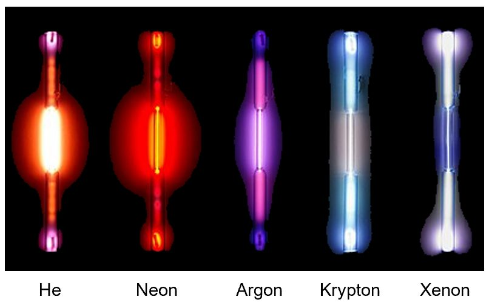

Pendulum project
Built a physical pendulum and compared its measured motion against the theoretical model of damped harmonic motion.
Uncertainty analysis · Data collection · Python · Video processing
Read the report
Mathematical Physics & Actuarial Science at the University of Toronto, looking for an actuarial internship.
I'm drawn to the place where rigorous theory meets real data.
Alongside a full sequence in analysis, linear algebra and physics, these are the courses closest to actuarial work.
See every courseBuilt a physical pendulum and compared its measured motion against the theoretical model of damped harmonic motion.
Uncertainty analysis · Data collection · Python · Video processing
Read the report
Measured the emission spectra of noble gases with a spectrometer, analyzed a dyed water solution, and tested how well the results matched the theoretical model.
Python · Spectrometer · Academic report
Read the reportNotes and outline of my final presentation for MAT295, a research reading course in operator algebras and K-theory.
Operator algebras · K-theory · Public speaking
Read the notesAlso: an energy calibrator for particle detectors, built from calibration data in Python.
See all projects